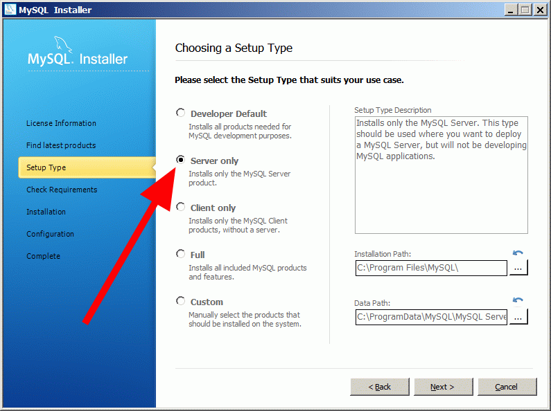
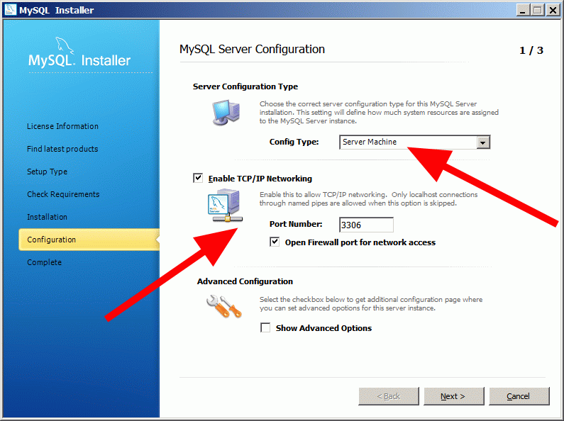
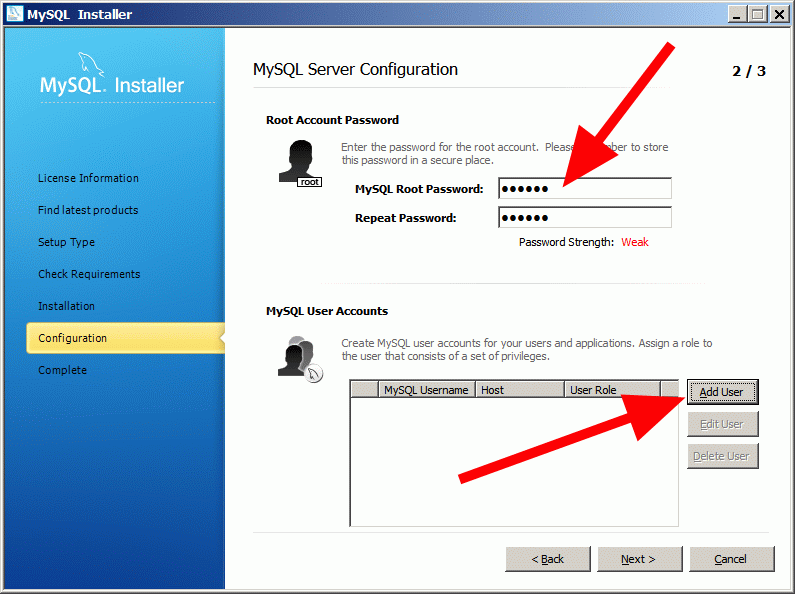
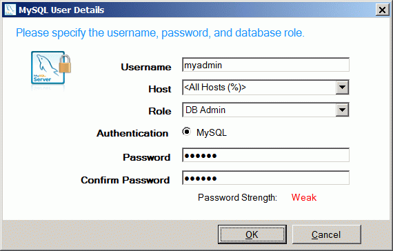
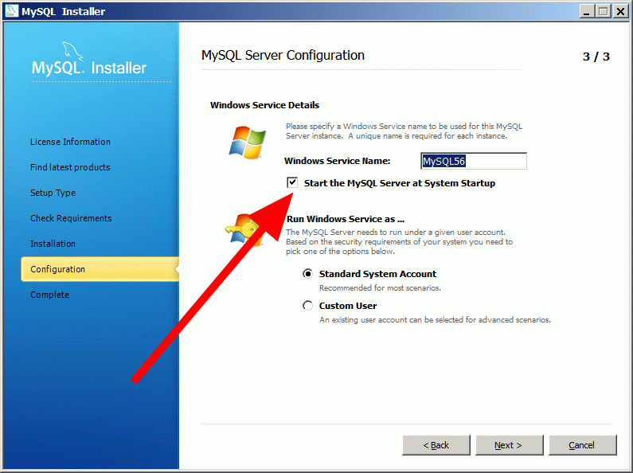
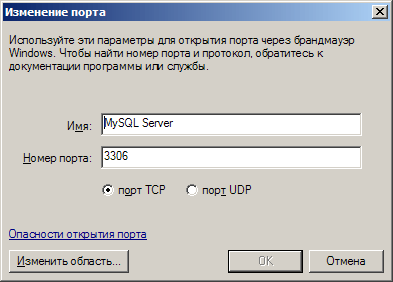

Если ранее MySQL-сервер не был установлен
Если ранее MySQL-сервер не был установлен

Рекомендуется загрузить последнюю стабильную версию с www.mysql.com
Можно устанавливать как на Windows, так и на Unix-системы.
Внимание! Версии MySQL ниже 5.0.27 не поддерживаются (из-за критических ошибок в сервере).
Саму установку, как правило, необходимо производить на отдельную серверную машину, либо на машину оператора (если отдельной серверной нет).
В ходе установки необходимо разрешить доступ к серверу по сети и добавить в исключения Firewall'а порт сервера (данной опции может и не быть).
В Runpad Pro поддерживается не только порт 3306, но для указания другого порта нужно выполнить ряд настроек (см. раздел "Если уже установлен MySQL").
Также необходимо создать пароль для специального встроенного пользователя "root".
Далее под этим пользователем можно будет входить в базу и изменять все настройки. Если предлагается ввести текущий пароль для root, то оставьте это поле пустым!
Нужно не забыть этому пользователю разрешить доступ к базе с удаленных машин, отметив соотв. опцию в настройках (ее может не быть).
Внимание! Если база MySQL будет расположена на отдельной машине или на локальной, но при подключении используется имя машины вместо localhost, то по умолчанию под пользователем root подключиться будет нельзя!
Для этого рекомендуется создать дополнительного пользователя с правами "DB Admin" (см. ниже), и все администраторские действия с базой осуществлять от его имени, а не от root!





Если в установке не предлагалось добавить в исключения Firewall'а порт сервера, то необходимо это сделать вручную:

Внимание! Необходимо установить переменную сервера max_allowed_packet для правильной работы с Runpad Pro.
В файле папки MySQL-сервера my.ini (Windows) или my.cnf (Unix) в раздел [mysqld] необходимо добавить строчку:
max_allowed_packet=32M
После чего нужно перезапустить MySQL-сервер. Для Windows это:
net stop mysql
net start mysql
Внимание! Если данный параметр уже прописан в конфигурационном файле, то необходимо только изменить его значение, а не добавлять новый!
Для версии MySQL ниже 5.6 файл my.ini по умолчанию расположен в %ProgramFiles%\MySQL\MySQL Server x.xx\my.ini
Для версии MySQL от 5.6 файл my.ini по умолчанию расположен в C:\ProgramData\MySQL\MySQL Server x.xx\my.ini
|
Если уже установлен MySQL, то необходимо выполнить ряд обязательных действий для правильной работы Runpad Pro.
Внимание! Версии MySQL ниже 5.0.27 не поддерживаются (из-за критических ошибок в сервере).
• Если у вас установлена старая версия, то рекомендуется ее удалить и установить самую последнюю стабильную.
• Если же вы не желаете удалять старую версию, а хотели бы только обновить ее на новую, то возможно придется
обновить и права пользователей. См. раздел справки http://dev.mysql.com/doc/refman/5.0/en/mysql-fix-privilege-tables.html
• Если вы не хотите ничего делать со старой версией, то можете установить новую версию в качестве второй инстанции и в этом случае две или более версий сервера будут работать одновременно. В таком случае нужно просто установить новую версию (см. раздел "Если ранее MySQL-сервер не был установлен"), но в ходе установки указать другое имя инстанции (сервиса для Windows), а также другой порт (отличный от порта по умолчанию 3306).
Для того, чтобы Runpad Pro мог работать с новой инстанцией нужно на машинах Администратора, Оператора и Сервера RunpadPro записать в реестр Windows номер порта MySQL.
В разделе HKEY_LOCAL_MACHINE\Software нужно создать подраздел RunpadProCommon, а в нем СТРОКОВЫЙ параметр def_mysql_port, для которого нужно записать числовое значение порта (например, 3307 - строка должна быть без кавычек, только числа!). После чего все соединения с MySQL в Runpad Pro будут идти через этот порт и, как следствие, вы сможете работать сразу с несколькими версиями MySQL-серверов.
Внимание для 64-битных ОС! Необходимо запускать 32-битную версию regedit для редактирования реестра. Она находится по след. пути:
%systemroot%\syswow64\regedit.exe (например, C:\Windows\syswow64\regedit.exe)
Для настройки установленного сервера запустите утилиту MySQLInstanceConfig и выполните все те же самые действия, которые описаны в предыдущем разделе:
"Если ранее MySQL-сервер не был установлен".
После чего необходимо обязательно настроить переменную сервера max_allowed_packet, о чем также написано в предыдущем разделе:
"Если ранее MySQL-сервер не был установлен".
Внимание! См. раздел "Если ранее MySQL-сервер не был установлен".
|
Удаление SQL-сервера необходимо производить стандартным образом через "Панель управления->Установка и удаление программ".
При этом после удаления сервера файл базы Runpad Pro может остаться, а может и нет (зависит от версии сервера).
Для повторной установки сервера его рекомендуется удалить (как и всю папку \MySQL), однако местоположение файлов БД также зависит от версии сервера.
|
|